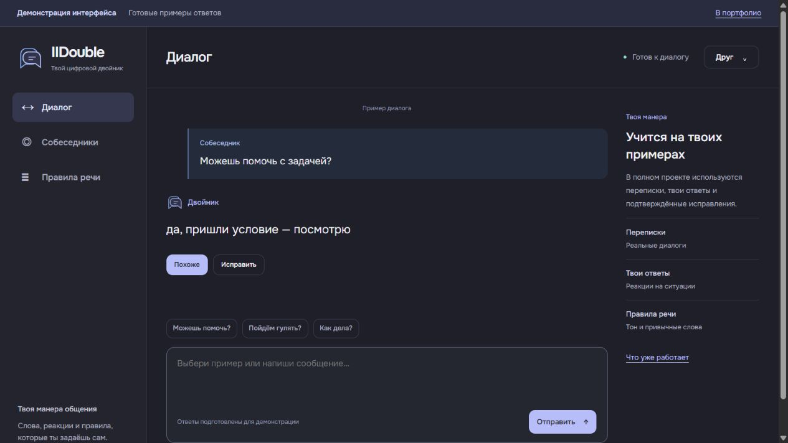
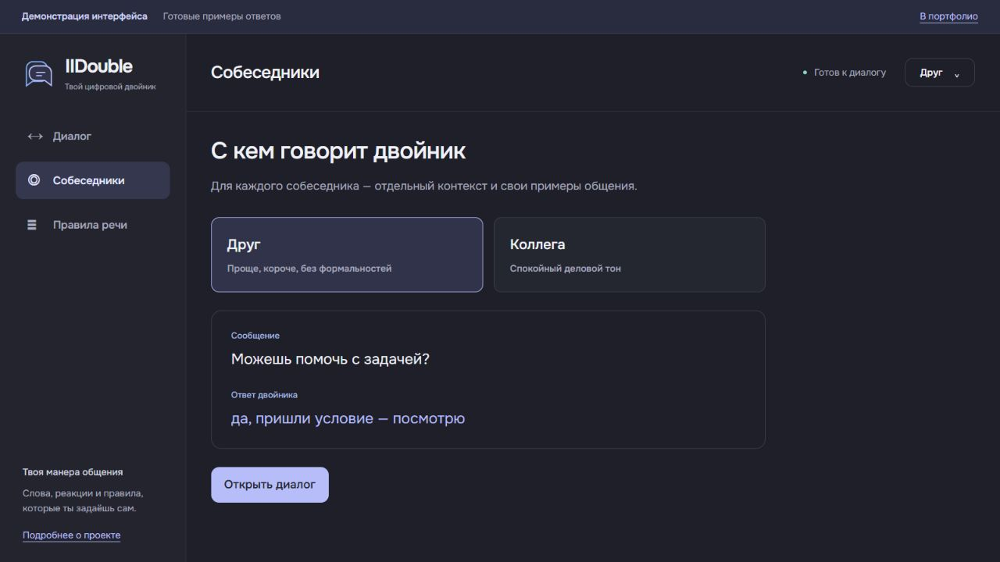
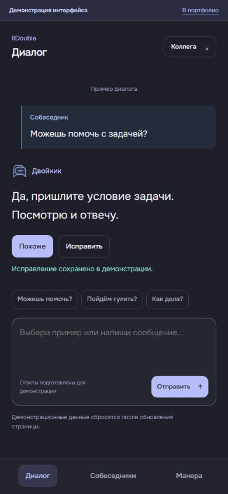

IIDOUBLE
Твоя манера общения —
в Telegram.
Бот и Mini App с диалогами, профилем владельца, правилами речи и обратной связью. Двойник опирается на примеры переписки и подтверждённые исправления.

- Задача
- Объединить общение с двойником, его обучение и настройки в одном понятном интерфейсе.
- Моя роль
- Сценарии, визуальное оформление, разработка бота, Mini App и серверной части.
- Технологии
- Python, FastAPI, SQLite, HTML, CSS, JavaScript, Telegram Bot API.
Что реализовано
Диалоги и профиль
История общения, ответы по частям и сведения о владельце, которые помогают учитывать его привычки.
Переписка и правила
Импорт диалогов с предпросмотром, отдельные вопросы владельцу и постоянные правила манеры речи.
Контекст собеседников
Отдельная история и настройки для разных людей: отношения, предпочтения и связанные переписки.
Обратная связь
Ответ можно оценить или исправить. Подтверждённое исправление сохраняется как пример.
Один сценарий —
на разных экранах


Посмотреть и попробовать
Демонстрация интерфейса
Выберите друга или коллегу, отправьте один из примеров и исправьте ответ. Это отдельная версия с подготовленными репликами: она показывает сценарий работы и не обращается к модели.
Проект развивается.
Реализованы основные сценарии и интерфейс. Продолжаю проверять качество ответов и работу памяти на разных ситуациях общения.
Что важно в этом кейсе
Показаны мой подход к структуре продукта, адаптации интерфейса и связи между диалогом, данными и обратной связью.
Посмотреть презентацию проектаНужен бот или Mini App?
Расскажите о задаче и нужном сценарии.